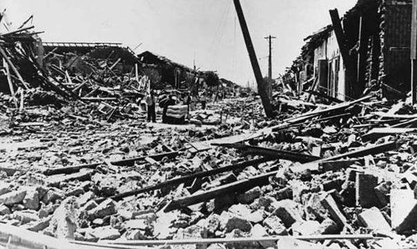

Самые сильные землетрясения
Список землетрясений


Землетрясения — это одно из самых мощных и разрушительных природных явлений на планете. Они возникают из-за внезапного смещения тектонических плит, которые образуют земную кору. Такие движения высвобождают огромные количества энергии, которая распространяется в виде сейсмических волн. Эти волны вызывают колебания поверхности земли, что может приводить к разрушению зданий, разрушению инфраструктуры и потере жизней. Магнитуда землетрясения, которая измеряется по шкале Рихтера или её аналогам, определяет силу и масштабы разрушений.
История показывает, что землетрясения оказывают значительное влияние не только на природу, но и на судьбы целых народов. К примеру, Великое чилийское землетрясение 1960 года, магнитудой 9.5, стало крупнейшим зарегистрированным землетрясением в истории. Оно вызвало цунами, которое затронуло берега нескольких континентов. Землетрясения часто невозможно предсказать, что делает их ещё более опасными. Однако современные технологии, такие как системы раннего оповещения и усовершенствованные инженерные решения, позволяют значительно снизить человеческие потери и минимизировать последствия этих катастроф.
 Великое чилийское землетрясение